Introduction to DFT and TDDFT#
Set of lectures delivered at mini ASESMA 2026#
Instructors#
Michele Pavanello
Valeria Rios Vargas
Ezekiel Oyeniyi
Affiliation#
Department of Physics
Rutgers University-Newark
Aim#
These lectures are for those graduate students in physics, chemistry and material science who wish to understand the basics of DFT and TDDFT. The focus is plane wave implementations with emphasis on the basics. For example, analyses of pseudopotentials and exchange-correlation functionals are not entartained.
Format#
Each chapter is extracted form a Jupyter Notebook Rise presentation supporting a 1.5 hour lecture. Hands-on excercises are integral part of the lectures and can be carried out over the Google Collaboratory.
Homework#
Fourier Transformations. Go through this before lecture 2.
Finding a good the plane wave cutoff. Go through this after lecture 2.
Hands on excercises. All use QEpy.#
DFT introduction #1
Team Rutgers(Valeria, Ezekiel and Michele) |
|
| An interactive session |
Retrieve this presentation at:
mini ASESMA 2026 \(\bullet\) Accra, Ghana \(\bullet\) June 16, 2026
Goals of this lecture#
Reasons for considering DFT
Basics of the theory behind DFT and Kohn-Sham DFT
KS equations and XC functional
Split into N groups#
Assign number
1-Nto each studentGroups sit together
Possibly have 1 instructor per group
The Real World#
Photocatalyst |
Catalytic nanoparticles |
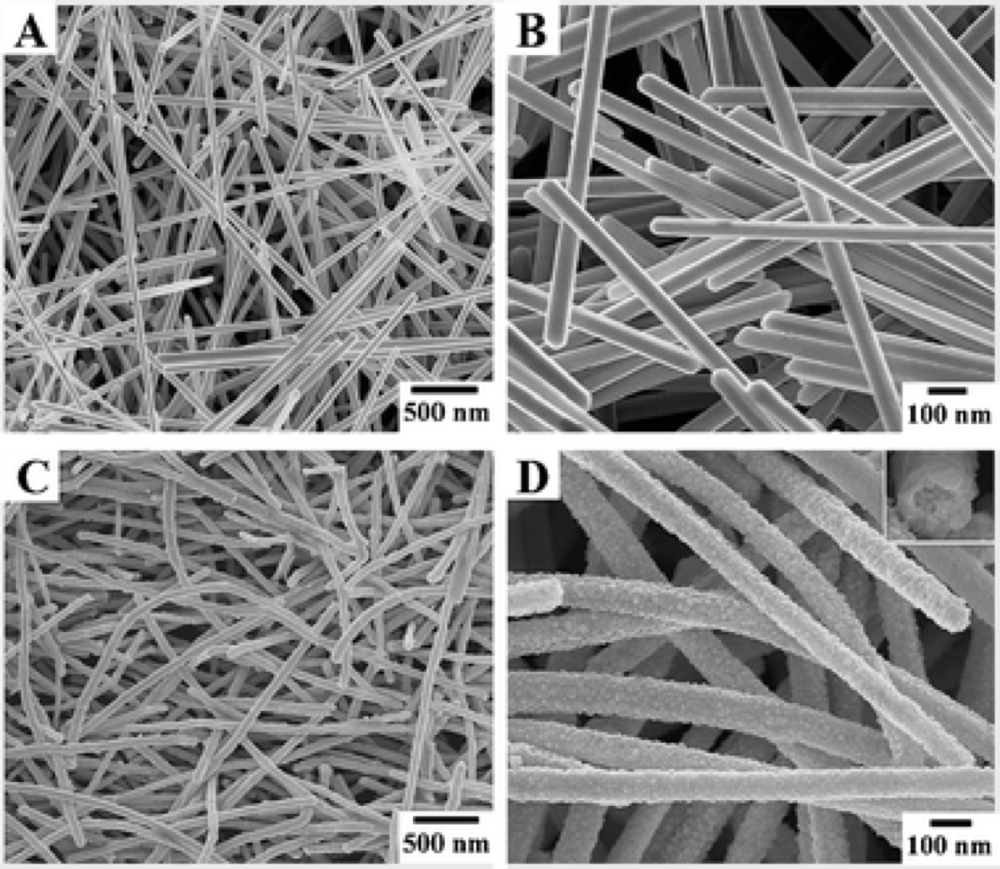 |
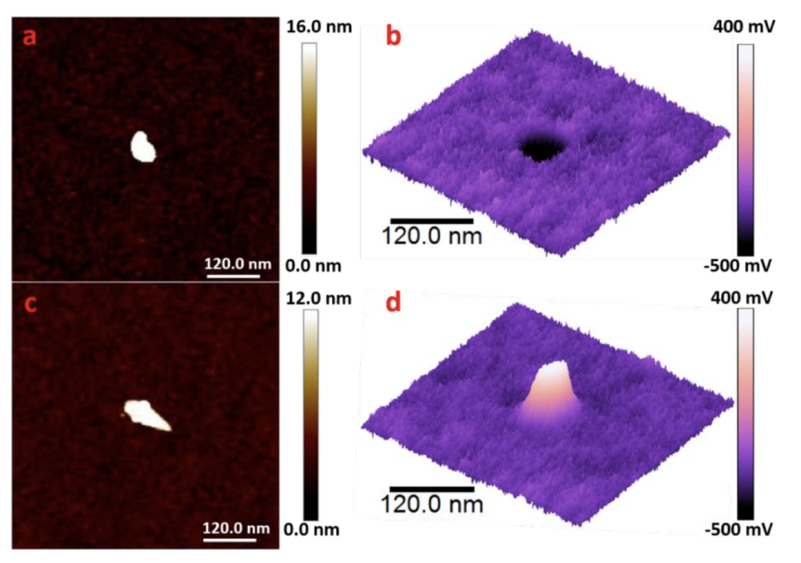 |
| Chem. Comm., 43, 6551 (2009) | PCCP, 21, 15080 (2019) |
Available electronic structure methods#
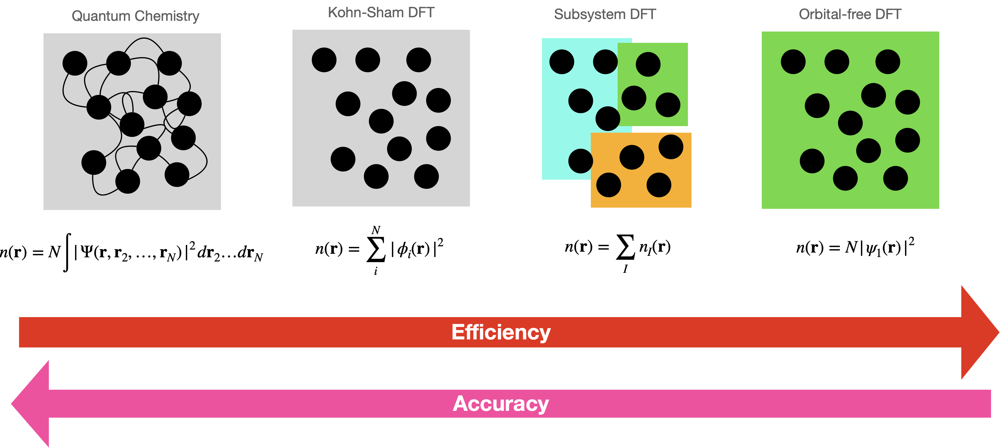
Challenge 1#
Let’s check your QM knowledge.
What is the molecular Hamiltonian?
Solution to Challenge #1 and a bit more…#
Molecular Hamiltonian for interacting electrons and nuclei of charge \(Z_\alpha\)
The Schrödinger equation for the ground state of the interacting system
Expectation values of each term of the Hamiltonian
The Hohenberg and Kohn theorems#
Therefore \(n(r)\), \(v_{eN}(r)\) or \(\Psi_0\) hold the same information.
In particular:
DFT exploits the latter as follows:
Challenge 2#
What do the energy functionals mean?
Write an expression for each of the functionals (\(T\), \(E_{ee}\), \(E_{eN}\)) in terms of \(n(r)\) and/or of \(\Psi_0\).
Solution to Challenge #2 and a bit more…#
Recalling:
For the other terms in the Hamiltonian:
$\(
T[\Psi_0] = \langle \Psi_0 | \hat T | \Psi_0 \rangle, ~~ E_{ee}[\Psi_0] = \langle \Psi_0 | \hat V_{ee} | \Psi_0 \rangle
\)$
What can we do with the HK theorems?
Introducing: the Kohn-Sham (KS) system of noninteracting electrons#
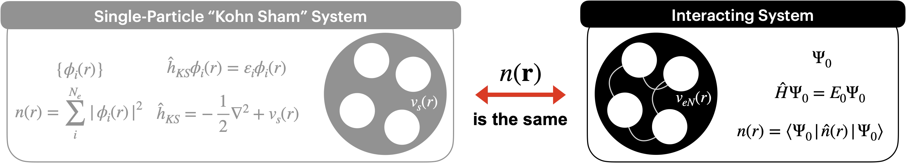
Energy functional for the KS system#
where the density $n(r) = \sum_i^N |\phi_i(r)|^2$.
The KS kinetic energy is
Mind: \(T_s \neq T\).
The classical e-e repulsion (Hartree) and e-N attraction:
Challenge 3: What is \(E_{xc}\)?#
Derive an expression for \(E_{xc}\)
Derive an expression for \(E_{xc}\) in terms of \(T\), \(E_{ee}\), \(T_s\) and \(E_H\).
Solution to Challenge #3#
The energy functional, whether KS or interacting, should yield the same energy value, therefore
Can \(E_{xc}[n]\) be approximated?
QEpy uses same structure as QE to specify the
xcfunctional
qe_options = {}
qe_options["&system"] = {}
qe_options["&system"]["input_dft"] = 'LDA'
Typically xc is already specified in the pseudopotential files.
Solving for the electronic structure (find the KS orbitals, \(\{\phi_i\}\))#
To minimize the energy, we define an appropriate Lagrangian:
At the minimum, we impose \(\frac{\delta \mathcal{L}_{KS}[\{\phi_i\}]}{\delta \langle \phi_j|}=0\) or just \(\frac{\delta \mathcal{L}_{KS}[\{\phi_i\}]}{\delta \phi_j^*(r)}=0\), and choose the so-called canonical orbitals (i.e., \(\varepsilon_{ij}=\varepsilon_{i}\delta_{ij}\)).
This yields the Kohn-Sham equations:
where \(v_s(r)\) includes effects of e-N attraction and e-e repulsion. But what is \(v_s(r)\)?
Challenge 4#
Considering the chain rule of functional differentiation (\(\phi^*\) and \(\phi\) are considered independent variables):
Can you derive the KS equations?
DFT introduction #2
Team Rutgers(Michele, Ezekiel & Valeria)Rutgers University-Newark |
|
| An interactive session |
Retrieve this presentation at:
mini ASESMA 2026 \(\bullet\) Accra, Ghana \(\bullet\) June 17, 2026
Goal of this lecture#
Understand what basis sets are
Introduce basics about basis sets (PWs and local orbitals like GTOs)
Discretize the KS equations so they can be solved by a computer
Focus on PW (GTOs done on your own, numerical orbitals introduced by Javier later)
Split into N groups#
Assign number
1-Nto each studentGroups sit together
Possibly have 1 instructor per group
from IPython.display import IFrame
import numpy as np
import matplotlib.pyplot as plt
from ase.build import molecule
My assumptions#
Basic linear algebra (vectors, matrices, operators, wavefunctions)
Undergraduate QM
Dirac notation (i.e., i-th vector \(\to |i\rangle\) or \(|\psi_i\rangle\), scalar product between i and j \(\to \langle \psi_i | \psi_j\rangle\))
Kohn-Sham equations
Why are basis sets needed?#
They provide a representation
Allow us to discretize the problem
Let’s expand a function in a basis#
\(\{\chi_i(r)\}\) are basis functions forming a basis set
\(\{C_{ik}\}\) are expansion coefficients, \(C_{ik}\in \mathbb{C}\)
Examples of basis sets#
Plane waves (PW)
Gaussian-Type Orbitals (GTOs)
Numerical Orbitals (Javier will introduce later this week)
…
What do they look like? Let’s use Python#
L=10; X = np.linspace(start=0,stop=L,num=1000,endpoint=False)
def pw(x,G):
return 1.0/np.sqrt(L)*np.exp(1j*2*np.pi*G*x)
def gto(x,center,alpha):
return np.sqrt(alpha/np.pi)*np.exp(-alpha*(x-center)**2)
fig = plt.figure()#(figsize=(8,5))
plt.plot(X,np.real(pw(X,G=1/L)), label=r"Re[PW] with $G=1/L$")
plt.plot(X,np.imag(pw(X,G=1/L)), label=r"Im[PW] with $G=1/L$")
plt.plot(X,gto(X,center=5,alpha=1),label=r"GTO centered in $x=5$, with $\alpha=1$")
plt.plot(5, 0, 'ko', markersize=10); plt.text(x=4.8,y=-0.1,s="ion position")
plt.ylim([-.5,1]); plt.legend()
<matplotlib.legend.Legend at 0x13a53cdf0>
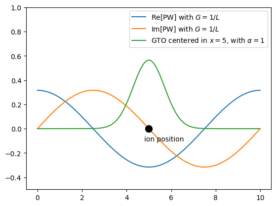
Challenge 1#
Are GTOs an orthonormal basis set? Justify.
Are PWs an orthonormal basis set? Justify.
The condition for orthonormality \(S_{ij}=\langle \chi_i | \chi_j\rangle = \delta_{ij}\).
How many plane waves are needed?#
You will attack this question in your Homework
The homework will introduce the
PW cutoffneeded by most PW codes, like QEFor QEpy, you will see something like (all values in Ry):
qe_options = {}
qe_options["&electrons"] = {}
qe_options["&electrons"]["ecutwf"] = 80
qe_options["&electrons"]["ecutrho"] = 320
ecutwfis the kinetic energy of the PW with the largest \(G\) point in Ryecutrhois the kinetic energy of the PW with the largest \(G\) point used to Fourier transform the electron density \(n(r)\) in RyLet me know during the break if you wish to know why these two cutoffs are different.
Challenge 1.2#
Convert 1 Ha into Ry
Convert 1 Ry into eV
How do basis sets “discretize” the KS equations?#
Working with your group mates, discretize the KS equations
Discretized KS equations#
The final result should be
or in matrix form
\(\mathbb{H}\): The KS Hamiltonian, mean field Hamiltonian or Fock matrix
\(\mathbb{C}\): The matrix of the coefficients. Each column represents a KS orbital. In PW, these are simply the
bands\(\varepsilon\): A diagonal matrix with the orbital energies, \(\varepsilon_k\). Also KS eigenvalues, …
\(\mathbb{S}\): Overlap matrix. Diagonal in PW.
Matrix elements of \(\hat T\) in plane waves, needed to solve \(\mathbb{HC=SC\varepsilon}\)#
Matrix elements of \(v_s(r)\), needed to solve \(\mathbb{HC=SC\varepsilon}\)#
But… we can use the \(G\) components of \(\tilde v_s(G)\):
which gives the matrix elements of \(v_s\) almost directly.
Hartree potential, the (computationally) most difficult piece of \(v_s(r)\)#
Challenge 2#
Can you derive the equations we just presented?
Now we can solve \(\mathbb{HC=C\varepsilon}\)?#
Remember \(v_s(r) = v_{eN}(r) + v_H(r) + v_{xc}(r)\).
First, a note on PWs#
Many plane waves are needed to represent “spiky” or highly oscillatory features, such as \(v_{eN}(r)\) and \(n(r)\) in the ionic core region.
Thus, pseudopotentials are typically employed to:
avoid the Coulomb singularity of the electron–nuclear interaction potential;
remove the need to represent the atomic cores, where densities and orbitals are highly oscillatory. More on this from Javier tomorrow!
Why are PW basis so useful?#
Orthonormal!
Systematically improvable: higher \(N\) (or equivalently \(\max\left[ G \right]\)) leads to better results.
Evaluation of the kinetic-energy operator and solution of the Poisson equation are easy, with \(\mathcal{O}(N\ln N)\) complexity.
DFT introduction #3 (short lecture)
Team Rutgers(Michele, Ezekiel & Valeria)Rutgers University-Newark |
|
| An interactive session |
Retrieve this presentation at:
mini ASESMA 2026 \(\bullet\) Accra, Ghana \(\bullet\) June 17, 2026
Goal of this lecture#
Understand occupations (aufbau and smearing)
Understand and code the Self-Consistent Cycle (SCF)
Band structure / DOS
Split into N groups#
Assign number
1-Nto each studentGroups sit together
Possibly have 1 instructor per group
The KS equations#
In discretized form#
How can we solve it?#
\(\mathbb{H}\) depends on \(v_s(r)\) which depends on \(n(r)\)#
uniform density
sum of atomic densities (SAD), usually taken from the pseudopotential
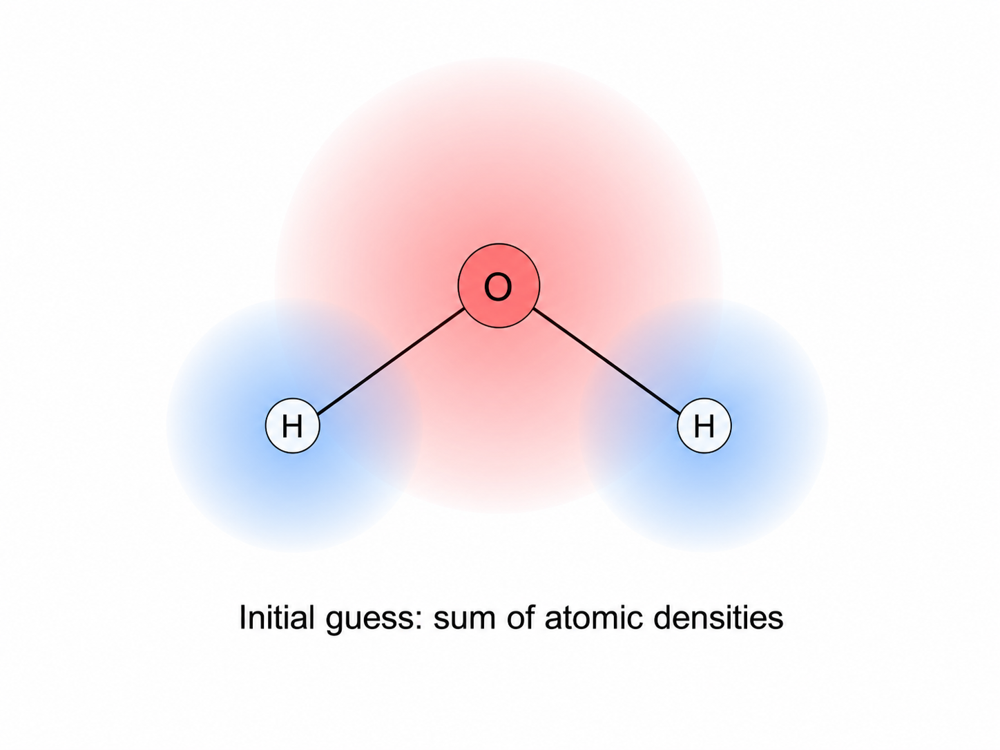
The Self-Consistent Field (SCF) loop#
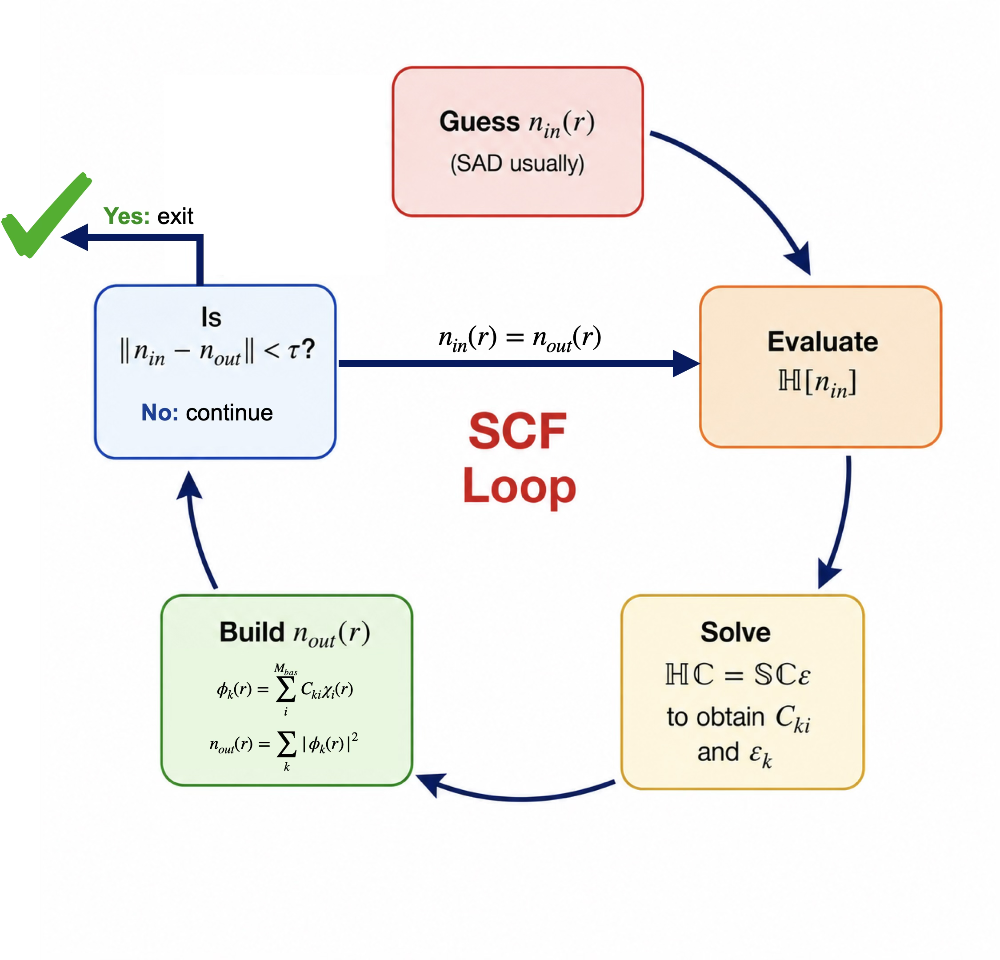
In QEpy and QE, the SCF is a basic workflow#
QE handles it via the card
&control
QEpy via the equivalent card in the options dictionary, like this:
qe_options = {}
qe_options['&control'] = {}
qe_options['&control']['calculation'] = 'scf'
The SCF threshold#
\(\tau\) usually is in units of energy. Appropriate convergence conditions are
Challenge 1#
The electron density
Derive the equation for obtaining the electron density from the basis functions \(\{\chi_k(r)\}\) and the wavefunction coefficients \(\{C_{ki}\}\). Use the expression
Occupation numbers#
The usual equation (remember (N) is the number of electrons):
For nonzero \(T\), or for small gaps \(\left(E_g \ll 1\right)\), where the SCF procedure may have difficulty converging:
For solids, the need for (k)-point sampling often requires smearing:
Challenge 2: what are these \(f_k\)?#
Code your own Fermi-Dirac smearing function to generate occupation numbers \(\{f_k\}\) given orbital energies \(\{\varepsilon_k\}\)
Consider a set of eigenvalues, \(\{\varepsilon_k\}\) coming from \(\color{green}{\mathbb{HC}=\mathbb{SC\varepsilon}}\). Evaluate the Fermi-Dirac distribution and impose \(\sum_k f_k = N\). Feel free to use AI to help you code it. Justify and explain your code to a tutor.
import matplotlib.pyplot as plt
import numpy as np
x=np.linspace(start=-10,stop=10,num=100)
tau = 0.5
plt.plot(x,(1+np.exp((x-0)/tau))**(-1))
[<matplotlib.lines.Line2D at 0x138595a50>]
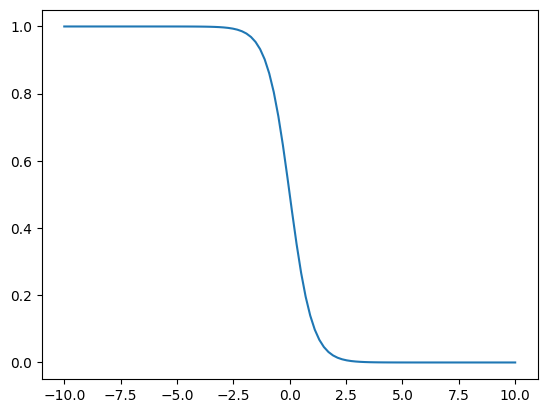
Orbital energies and TDDFT
Some python code to run the example later...
import numpy as np
from qepy.calculator import QEpyCalculator
from ase.lattice.hexagonal import Graphene
from dftpy.formats import download_files
from ase import Atoms
import matplotlib.pyplot as plt
qe_options = {
'&control': {
'calculation': "'scf'",
'prefix': "'tmp'",
'pseudo_dir': "'./'"},
'&system': {
'ibrav' : 0,
'ecutwfc': 20,
'ecutrho': 200},
'&electrons': {
'conv_thr' : 1.0e-8},
'atomic_species': ['C 12.0107 C.pz-vbc.UPF'],
'k_points automatic': [' 9 9 1 0 0 0'],
}
additional_files = {
'C.pz-vbc.UPF' : 'https://pseudopotentials.quantum-espresso.org/upf_files/C.pz-vbc.UPF',
}
download_files(additional_files)
Goals of this lecture + hands-on session#
Part I#
The meaning and usefulness of DFT orbitals and orbital energies
Band structure with QEpy
Part II#
Basic theory of KS TDDFT (real-time and linear response)
Linear-response KS TDDFT
Real-time KS TDDFT
Part III#
Hands on: LR-TDDFT simulations of molecules with QEpy
PART I: KS orbitals#
What is the physical meaning of KS orbitals?#
Generally KS or HF orbitals have no rigorous physical meaning
The HOMO is different: HF has Koopmans’ theorem and KS has Janak’s theorem relating it to the IP.
What about the virtuals? The LUMO? … no rigorous physical meaning.
An overview of what you can do with orbitals#
If you are interested in ionization energies:#
GW
GW quasiparticle energies provide rigorous ionizations / affinities
Hybrid functionals in DFT (HSE, PBE0, …) approximate GW results and usually predict ionizations/affinities via orbital energies much better than GGA functionals, like PBE
If you are interested in excitation energies:#
TDDFT
where \(i,j,k,l,\ldots \in \text{occupied}\) and \(a,b,c,d,\ldots \in \text{virtuals}\).
Comparing calculated and measured electronic energies#
Photoemission (PES / XPES) and DFT orbital energies#
Photoemission spectroscopy (PES) ejects electrons with a photon and reports \(h\nu-E_{kin}\).
With LDA or GGA functionals (e.g. PBE), orbital energies and gaps are not quantitatively accurate.
Hybrid functionals and GW are used when agreement with PES/XPS matters.
Band structure: ARPES vs theory (graphene)#
Angle-resolved photoemission (ARPES) maps occupied bands \(E_n(\mathbf{k})\) in momentum space.
A classic example is monolayer graphene on SiC: Bostwick et al., Nature Physics 3, 36 (2007).
Panel (a): ARPES overlaid with a DFT calculation.
The linear Dirac cones at \(K\) are reproduced.
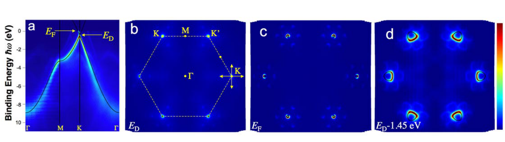
Figure adapted from Bostwick et al., Nature Physics 3, 36 (2007), Fig. 1.
Challenge 1#
In the limit of having the exact exchange-correlation functional, should you expect KS-DFT orbital energies to deliver exact band structures?
Discuss among the group and be ready to share your thoughts with the class.
Band structures: Graphene#
Build system and solve SCF#
atoms = Graphene('C', latticeconstant={'a':2.46, 'c': 7})
atoms.calc = QEpyCalculator(qe_options=qe_options, logfile='tmp.out')
energy = atoms.get_potential_energy()
Look at the FBZ and select special \(k\) points#
lat = atoms.cell.get_bravais_lattice()
lat.plot_bz(show=True)
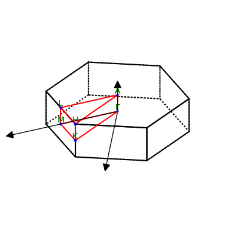
<Axes3D: >
Choose \(\Gamma \to M \to K \to \Gamma\) band path#
Plot the first 6 bands#
path = atoms.cell.bandpath('GMKG',npoints=61)
qe_options['&system']['nbnd']=8
band = atoms.calc.get_band_structure(qe_options, kpts=path)#, reference=atoms.calc.get_fermi_level())
band.subtract_reference()
band.plot()
<Axes: ylabel='energies [eV]'>
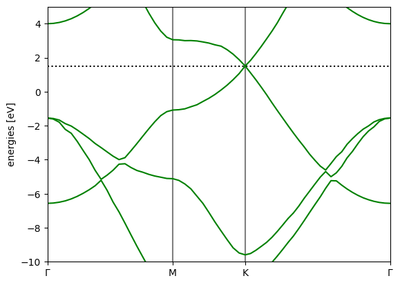
Challenge 1.2#
Band structure of Si diamond structure
Use the hands-on band structure tutorial. Notice the
ASEtoolBulkfromase.build
from ase.build import bulk
atoms = bulk('Si','diamond',a=5.431)
Compare the notebook for Si and for graphene
Make a new notebook with a system of your choice and compute the band structure.
PART II: TDDFT based on KS-DFT#
Electronic excitations and UV–vis spectroscopy#
UV–vis absorption probes electronic excitations from the ground singlet \(S_0\) to excited singlets \(S_n\) at photon energy \(E = h\nu\).
In a Jablonski diagram, upward arrows are absorption; downward arrows are fluorescence; wavy/dashed paths are internal conversion and intersystem crossing.
Each allowed \(S_0 \to S_n\) transition contributes a peak in the spectrum.
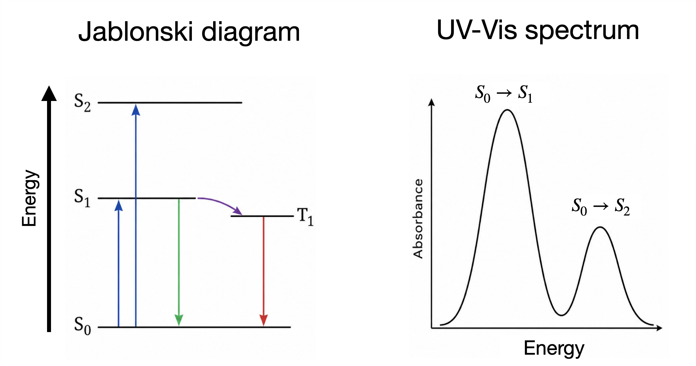
TDDFT vs experiment: \(S_0 \to S_1\) excitation energies#
Benchmark on 29 small molecules: mean absolute error (MAE) of \(S_0 \to S_1\) excitations vs experiment.
Wavefunction methods vs TD-DFT functionals.
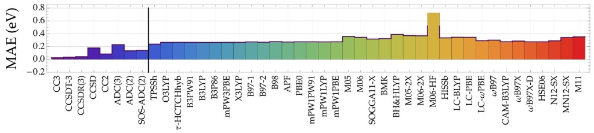
Adapted from Suellen et al., J. Chem. Theory Comput. 15, 4581 (2019), Fig. 3 (doi:10.1021/acs.jctc.9b00446).
Let’s dive a bit deeper into TDDFT#
Real-time TDDFT equations :#
The rt-TDDFT equations can be integrated in time#
This approach delivers \(\{\phi_k(\mathbf{r},t)\}\) and thus \(n(\mathbf{r},t)\)
…and any other derived quantity
ultrafast electron dynamics (scattering, Coulomb explosions, stopping power, etc…)
electronic oscillations in the frequency domain, \(n(\mathbf{r},\omega)=\int n(\mathbf{r},t)\, e^{i\omega t}\, dt\), give access to spectra
Why does \(n(\mathbf{r},\omega)\) yield spectra?#
Out of equilibrium, the time-dependent wavefunction could be
The corresponding time-dependent density is
\(\delta n(\mathbf{r},t)\) oscillates at the excitation frequency \(\omega_{01} = \frac{E_1-E_0}{\hbar},\) with amplitude given by the transition density \(n_{10}(\mathbf r) = n_{01}(\mathbf r)=\langle \Psi_0|\hat n(\mathbf r)|\Psi_1\rangle\).
In the frequency domain, these oscillations produce peaks at the excitation energies:
Therefore, the frequencies contained in \(\delta n(\mathbf r,\omega)\) give access to the excitation spectrum.
Two important ingredients of TDDFT#
#1: The occupation numbers#
Challenge 2#
The occupation numbers, \(\{f_k\}\), are taken to be independent of time. Why?
Discuss among the group and be ready to share your thoughts with the class.
#2: The time-dependent KS potential#
is defined as that particular potential such that \(n_{KS}(\mathbf{r},t) = n(\mathbf{r},t)\)
Once \(v_{xc}(\mathbf{r},t)\) is approximated, we can integrate the rt-TDDFT equations
Several software implement rt-TDDFT, and if time permits, we will consider it later in this lecture
Challenge 3#
How can \(v_{xc}(\mathbf{r},t)\) be approximated? Would \(v_{xc}(\mathbf{r},t)= v_{xc}[n(t)](\mathbf{r}) = \frac{\delta E_{xc}[n]}{\delta n(\mathbf{r})}\bigg\vert_{n=n(\mathbf{r},t)}\) be a good approximation?
Discuss among the group and be ready to share your thoughts with the class.
The adiabatic approximation in rt-TDDFT#
uses the ground state XC functional and potential and evaluates them with the time-dependent density, \(n(\mathbf{r},t)\).
The time-dependent xc potential is not defined in this way
The adiabatic approximation is perhaps the best we can do. But together with the self-interaction error, it leads to some shortcomings:
predicted optical gaps are usually too low (e.g., PBE water: 6.5 eV vs 8.5 eV, see also this paper.)
There are fixes but you must evaluate them carfully before use.
use of hybrids
use of GGA+U
use of long-range corrected xc potentials (LB94, SAOP)
other functionals (Koopman’s, etc)
Does \(v_{xc}(\mathbf{r},t)\) exist?#
Targeting the excited states directly: linear-response TDDFT#
In other words:#
Linear density response of the interacting system#
For a weak perturbing potential \(\delta v_{\mathrm{appl}}(\mathbf{r},\omega)\), the density response, \(\delta n(\mathbf{r},\omega)\), satisfies
where \(\chi\) is the density response function of the interacting system
Why is \(\chi\) interesting?#
From first-order perturbation theory, it can be shown that:
Linear density response of the KS system#
To find \(\chi\) we once again consider the Kohn–Sham non-interacting system.
The interacting and KS systems bust share the same density reponse, \(\delta n\) (using a short-hand notation)
| \({\color{red}\chi}\,\delta v_{\mathrm{appl}}\) | \(\chi_s\,{\color{red}\delta v_s}\) |
What is \(\color{red}{\delta v_s}\)?#
where \(\delta v_H(\mathbf{r},\omega) = \int \dfrac{\delta n(\mathbf{r}',\omega)}{|\mathbf{r}-\mathbf{r}'|}\, d\mathbf{r}'\) and \(\delta v_{xc}(\mathbf{r},\omega) = \int d\mathbf{r}' f_{\mathrm{xc}}(\mathbf{r},\mathbf{r}',\omega)\,\delta n(\mathbf{r}'\omega)\), defining an xc kernel.
Combining the definitions introduced thus far (using a short-hand notation):
By taking the derivative with respect to \(\delta v_{\mathrm{appl}}\), we obtain the important Dyson-like relation:
Casida equations#
The inverse of the Dyson equation is
can be expressed in a basis set of occupied/virtual products, leading to the Casida equation
where
with \(\omega_{ia} = \varepsilon_a - \varepsilon_i\), are the KS orbital excitations.
Excitation energies \(\Omega_k\) and the eigenvectors \((X_{ia}, Y_{ia})\) deliver transition densities \(n_{0k}(\mathbf{r}) = \sum_{ia} (X_{ia}+Y_{ia})\phi_i(\mathbf{r})\phi_a(\mathbf{r})\).
What can you obtain from lr-TDDFT?#
excitation energies / spectra
check out this nice paper
transition densities, transition dipoles and other derived quantities
e-e structure factors, dielectric functions, etc…
you’ll learn about some of these applications next week